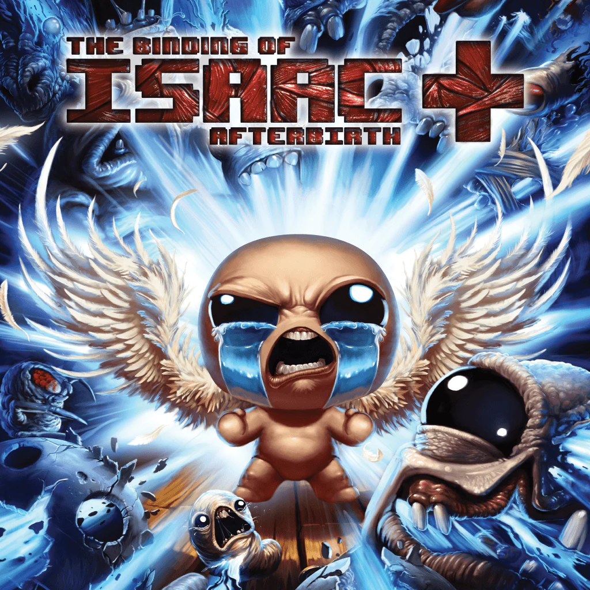

...

La introducción de este videojuego es bastante complicada de explicar es una verdadera historia de The Binding of Isaac es una desgarradora metáfora sobre el abuso infantil, el fanatismo religioso y el suicidio involuntario, narrada a través de la psicología distorsionada de un niño de cinco años. Aunque el juego presenta un descenso de fantasía oscura a través de mazmorras llenas de monstruos, toda la aventura es en realidad una alucinación agónica. Ocurre dentro de la mente de Isaac en los últimos minutos de su vida, mientras se asfixia encerrado en el baúl de juguetes de su habitación.
Aqui puedes jugarlo mediante PC via steam The Binding Of Issac: Rebirth.
Lore
La introducción
A veces pensamos como nuestro querido y estimado issac tuvo una vida relativamente decente antes de la crisis de su madre. Siendo el caso muy erroneo, el pequeño issac ya viviría de forma precaria más rara
Mom's Feet
Issac y su queridisma madre.
Mom's Feet
Issac y su queridisma madre.